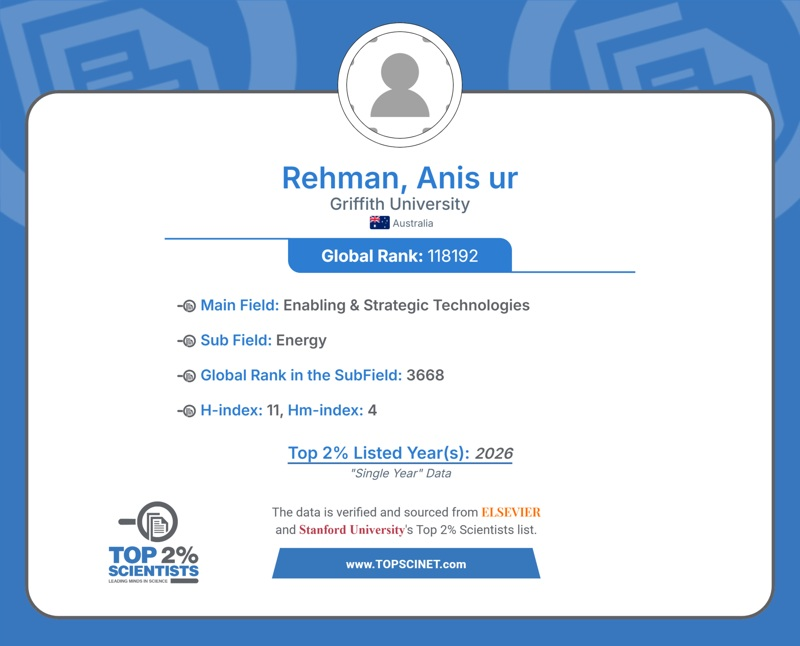
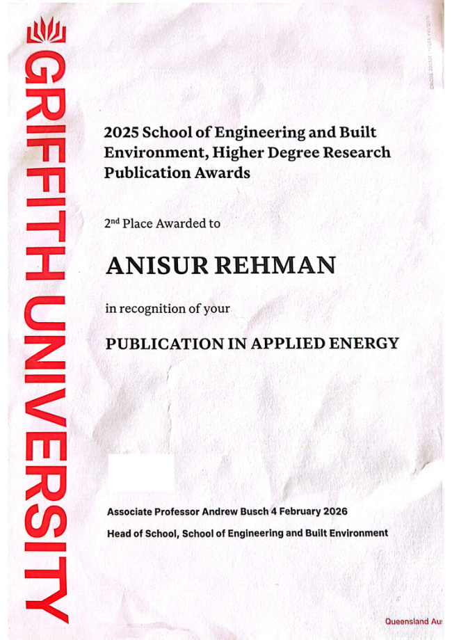
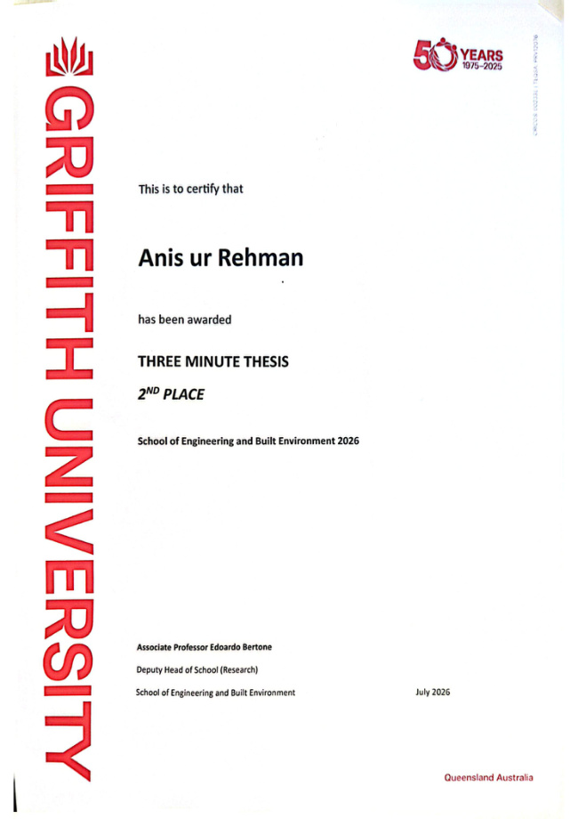
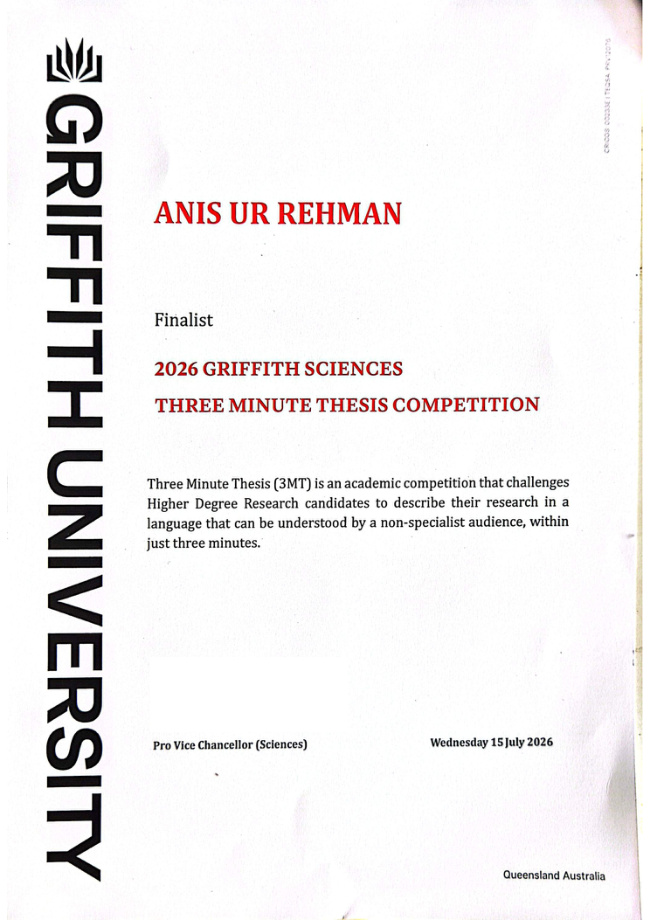

2026 · Single-year listing
Top 2% Scientists
TOPSCINET certificate
Listed in the Energy subfield in TOPSCINET’s 2026 single-year records, based on the Elsevier science-wide citation database.
2026 release · Citation year 2025

Research · Service · Development
Recognition for research and communication, service to the academic community, and continued learning in engineering.
Citation-based recognition
2026 · Single-year listing
TOPSCINET certificate
Listed in the Energy subfield in TOPSCINET’s 2026 single-year records, based on the Elsevier science-wide citation database.
2026 release · Citation year 2025

Research & communication

Griffith University
Second place in the School’s 2025 Higher Degree Research Publication Awards, recognising a publication in Applied Energy.
2025 award · presented 4 February 2026
View certificate PDF
Griffith University
Second place in the School of Engineering and Built Environment’s 2026 Three Minute Thesis competition.
July 2026
View certificate PDF
Griffith University
Finalist in the 2026 Griffith Sciences Three Minute Thesis competition, communicating doctoral research to a non-specialist audience.
15 July 2026
View certificate PDFCertificates are public copies with personal identifiers and signatures omitted where applicable.
Service to the research community
Reviewer certificates from journals in energy, engineering, transport and sustainability. Each entry gives the review period recorded on its certificate.
Elsevier · Journal editors
Recognised for 1 peer review contributed to Chemical Engineering Journal (September 2025).
Review period: September 2025
View certificate PDFElsevier · Journal editors
Recognised for 1 peer review contributed to Electric Power Systems Research (September 2025).
Review period: September 2025
View certificate PDFElsevier · Journal editors
Recognised for 21 peer reviews contributed to Energy (February 2025–November 2025).
Review period: February 2025 – November 2025
View certificate PDFElsevier · Journal editors
Recognised for 3 peer reviews contributed to Energy Conversion and Management: X (July 2025–January 2026).
Review period: July 2025 – January 2026
View certificate PDFElsevier · Journal editors
Recognised for 1 peer review contributed to Energy Nexus (May 2025).
Review period: May 2025
View certificate PDFElsevier · Journal editors
Recognised for 3 peer reviews contributed to Energy Strategy Reviews (May 2024–August 2024).
Review period: May 2024 – August 2024
View certificate PDFElsevier · Journal editors
Recognised for 3 peer reviews contributed to Energy and Buildings (September 2025–January 2026).
Review period: September 2025 – January 2026
View certificate PDFElsevier · Journal editors
Recognised for 1 peer review contributed to Engineering Applications of Artificial Intelligence (May 2025).
Review period: May 2025
View certificate PDFElsevier · Journal editors
Recognised for 1 peer review contributed to Environmental Development (August 2025).
Review period: August 2025
View certificate PDFElsevier · Journal editors
Recognised for 19 peer reviews contributed to Journal of Energy Storage (July 2025–November 2025).
Review period: July 2025 – November 2025
View certificate PDFElsevier · Journal editors
Recognised for 1 peer review contributed to Next Energy (August 2025).
Review period: August 2025
View certificate PDFElsevier · Journal editors
Recognised for 1 peer review contributed to Sustainable Cities and Society: Advances (October 2025).
Review period: October 2025
View certificate PDFElsevier · Journal editors
Recognised for 4 peer reviews contributed to Sustainable Futures (June 2024–September 2025).
Review period: June 2024 – September 2025
View certificate PDFElsevier · Journal editors
Recognised for 1 peer review contributed to Transport Policy (August 2025).
Review period: August 2025
View certificate PDFElsevier · Journal editors
Recognised for 2 peer reviews contributed to Transportation Research Part D: Transport and Environment (July 2025–November 2025).
Review period: July 2025 – November 2025
View certificate PDFContinuing professional development
Short courses and webinars covering energy systems, engineering practice and professional skills.
Energy Research Center, COMSATS University Islamabad, Lahore Campus
Attended a two-day course; certificate records 1.5 CPD points.
21 August 2021 – 22 August 2021
View certificate PDFEnergy Research Center, COMSATS University Islamabad, Lahore Campus
Attended a two-day course; certificate records 1.5 CPD points.
10 July 2021 – 11 July 2021
View certificate PDFPakistan Engineering Council
Attended a one-day CPD live webinar; certificate records 1 CPD point.
30 April 2022
View certificate PDFPakistan Engineering Council
Attended a one-day CPD live webinar; certificate records 0.5 CPD points.
4 November 2022
View certificate PDFPakistan Engineering Council
Attended a one-day CPD live webinar; certificate records 1 CPD point.
27 May 2022
View certificate PDFPakistan Engineering Council
Attended a one-day CPD live webinar; certificate records 1 CPD point.
7 April 2022
View certificate PDFPakistan Engineering Council
Attended a one-day CPD live webinar; certificate records 1 CPD point.
29 June 2022
View certificate PDFPakistan Engineering Council
Attended a one-day CPD live webinar; certificate records 1 CPD point.
14 April 2022
View certificate PDFPakistan Engineering Council
Attended a one-day CPD live webinar; certificate records 1 CPD point.
22 June 2022
View certificate PDFPakistan Engineering Council
Attended a one-day CPD live webinar; certificate records 1 CPD point.
25 June 2022
View certificate PDFPakistan Engineering Council
Attended a one-day CPD live webinar; certificate records 1 CPD point.
23 April 2022
View certificate PDFPakistan Engineering Council
Attended a one-day CPD live webinar; certificate records 1 CPD point.
5 July 2022
View certificate PDFPakistan Engineering Council
Attended a one-day CPD live webinar; certificate records 1 CPD point.
16 July 2022
View certificate PDFPakistan Engineering Council
Attended a one-day CPD live webinar; certificate records 1 CPD point.
25 August 2022
View certificate PDFPakistan Engineering Council
Attended a one-day CPD live webinar; certificate records 1 CPD point.
26 July 2022
View certificate PDFPakistan Engineering Council
Attended a one-day CPD live webinar; certificate records 1 CPD point.
28 May 2022
View certificate PDFPakistan Engineering Council
Attended a one-day CPD live webinar; certificate records 0.5 CPD points.
20 October 2022
View certificate PDF